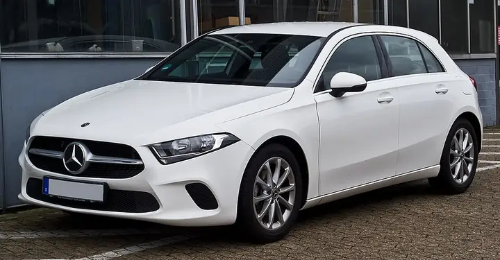
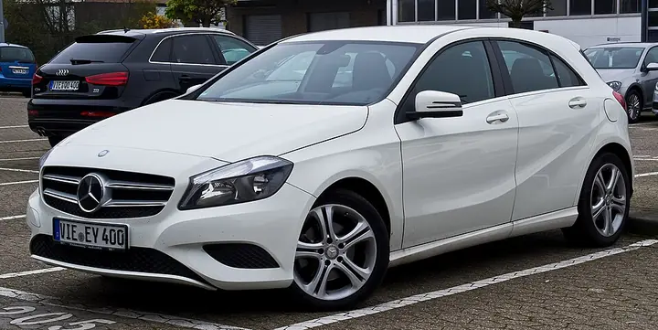

Mercedes-Benz A-Class
Fourth generation (W177; 2018) · 2018–present
Abstract
This generation of the Mercedes-Benz A-Class is a subcompact executive car (C), built April 2018 – present in Germany: Rastatt (2018–2026), China: Beijing (Beijing Benz; LWB sedan), Finland: Uusikaupunki (Valmet Automotive) and other plants. Body styles: 5-door hatchback, 4-door sedan. Layout: Front-engine, front-wheel-drive. Designed by Mark Fetherston.

_%E2%80%93_f_16032019.jpg){kind=link}
1Specifications
| Production | April 2018 – present |
|---|---|
| Model years | 2018–present2019–2022 (North America) |
| Assembly | Germany: Rastatt (2018–2026)China: Beijing (Beijing Benz; LWB sedan)Finland: Uusikaupunki (Valmet Automotive)Hungary: Kecskemét (Mercedes-Benz Manufacturing Hungary)Mexico: Aguascalientes (Cooperation Manufacturing Plant Aguascalientes, 2018–2020)Thailand: Samut Prakan (TAAP)Malaysia: Pekan (HICOM)Indonesia: Bogor (MBI) |
| Designer | Mark Fetherston |
| Class | Subcompact executive car (C) |
| Body style | 5-door hatchback4-door sedan |
| Layout | Front-engine, front-wheel-driveFront-engine, all-wheel-drive (4Matic) |
| Platform | MFA2 |
| Engine | Petrol:1.3 L M282 CGI I4 turbo2.0 L M260 I4 turbo2.0 L M139 AMG I4 turboPetrol plug-in hybrid:1.3 L M282 I4 turboDiesel:1.5 L OM608 BlueTEC I4 turbo2.0 L OM654 BlueTEC I4 turbo |
| Transmission | 6-speed manual (2018–2023)7-speed automatic8-speed automatic7-speed DCT8-speed DCT |
| Battery | 15.6 kWh lithium-ion (Plug-in hybrid) |
| Wheelbase | 2729 mm2789 mm (LWB sedan) |
| Length | 4419 mm (hatchback)4549 mm (sedan)4622 mm (LWB sedan) |
| Width | 1796 mm |
| Height | 1440 mm (hatchback)1454 mm (sedan) |
| Weight | 1300–1445 kg1680 kg (Plug-in Hybrid) |
| Related | Mercedes-Benz GLA (H247)Mercedes-Benz GLB (X247)Mercedes-Benz CLA (C118)Mercedes-Benz B-Class (W247) |
| Predecessor | Mercedes-Benz A-Class (W176) |
2Versions
- Sedan (V177, Z177)
- Mercedes-AMG A 35 4MATIC+, A 45 4MATIC+, and A 45 S 4MATIC+
- 2023 facelift
3Previous generations

_%E2%80%93_Frontansicht,_30._November_2014,_Ratingen.jpg){kind=link}
4Generation by generation
Length +23% from the first to the last
W168 19963,606 mm
W169 20043,838 mm
W176 20124,292 mm
W177 20184,419 mm